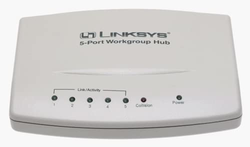

Equipments
Network Hub (Optional)
If you don't to want to spend your time to set Port Mirror to Network Switch, please look for ancient Hub for packet sniffing.
LINKSYS EW5HUB

D-Link DE-805TP

Network Switch
It's better to have Port Mirroring function to the Network Switch.
VigorSwitch G1080
8-Port Smart Lite Managed Gigabit Switch
- Default IP: 192.168.1.224
- Default Password: admin
- Website: *
- Port Mirroring:

Ethernet Router
MikroTik RB750Gr3 hEX
5x Gigabit Ethernet, Dual Core 880MHz CPU, 256MB RAM, USB, microSD, RouterOS L4.
- Default IP: 192.168.88.1
-
Website: *
-
Config PPPoE server with VLAN support
Interfaces > VLAN > Name: vlan2 , VLAN ID: 2, Interface: eth3
IP > Pool > Name: PPPoE_Pool, Address: 10.1.1.2-10.1.1.254
PPP > Profiles > Name: PPPoE_profile, Local Address: 10.1.1.1, Remote Address: PPPoE_Pool
PPP > PPPoE Server > Interface: vlan2; Default Profile: PPPoE profile